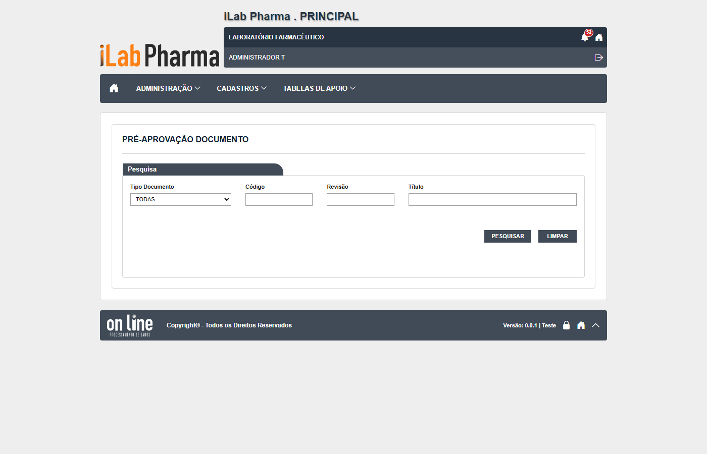
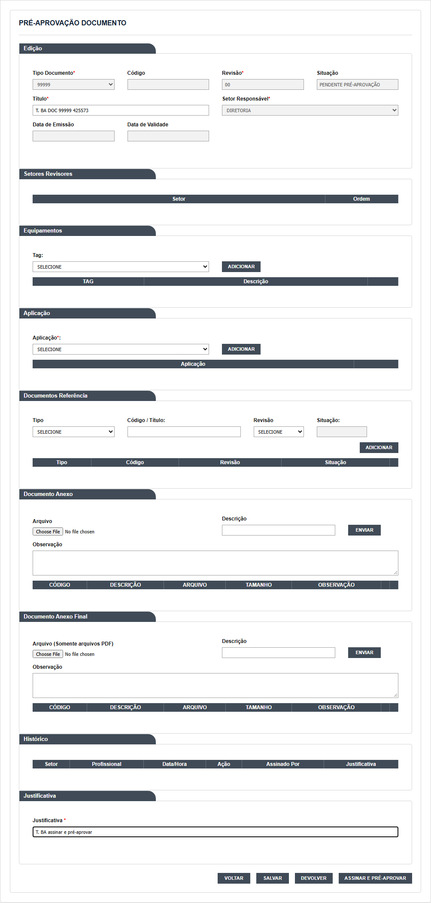
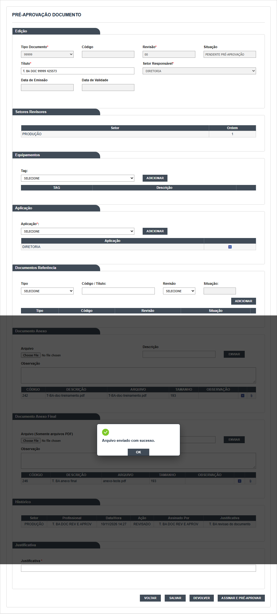
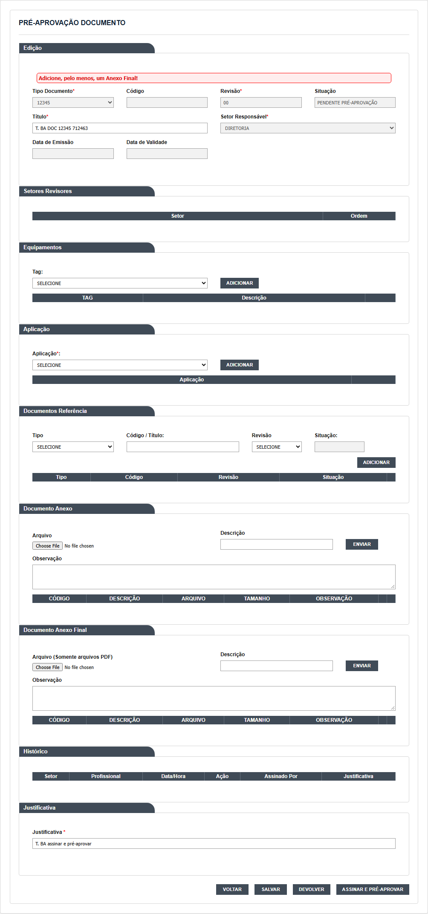
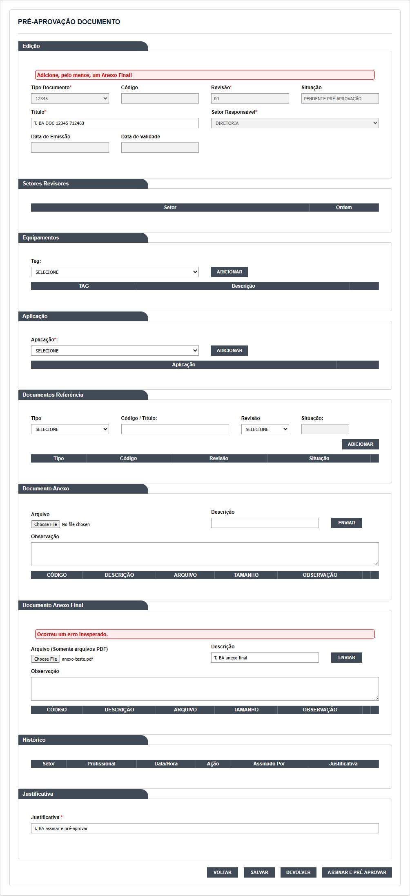
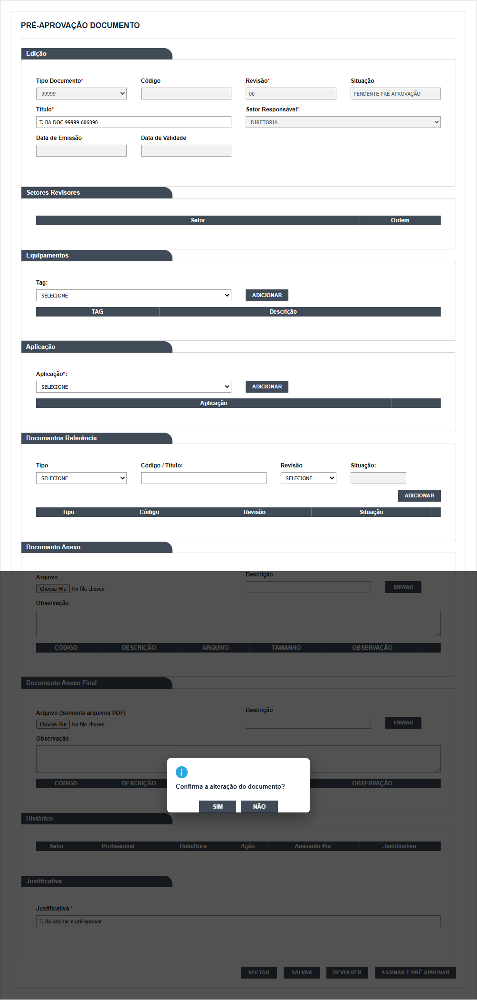
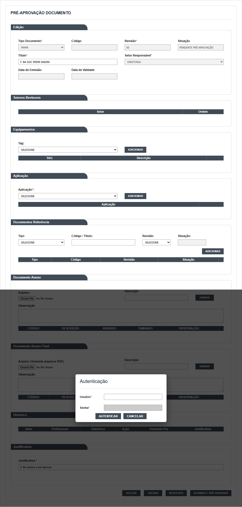
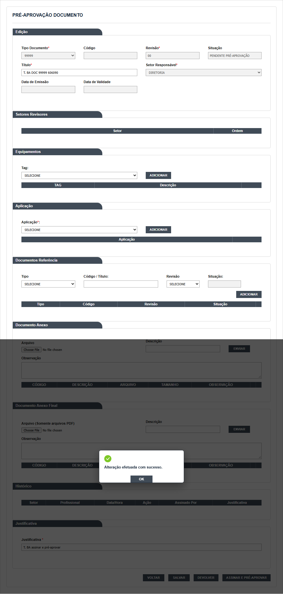
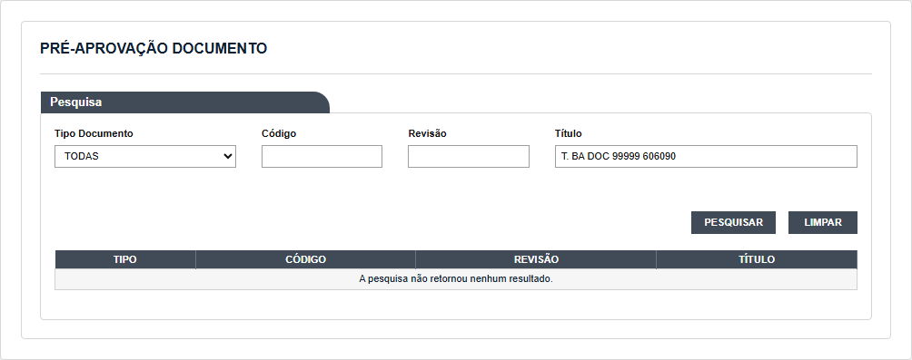

Menu: DOCUMENTO (o título da tela é "PRÉ-APROVAÇÃO DOCUMENTO") · Situação do manual: Em ajuste · Fonte dos prints: versão nova.
Para que serve
É a etapa em que o responsável confere o documento já revisado, anexa o arquivo final (a versão que vai valer) e assina a pré-aprovação. Sem o anexo final o sistema não deixa avançar. Depois dela o documento segue para a Aprovação.
Antes de começar (o que precisa existir)
| O que precisa existir | Para quê | Onde se cadastra |
|---|---|---|
| Documento revisado (PENDENTE PRÉ-APROVAÇÃO) | É o que aparece na lista | Revisão Documento (manual 02) |
| Arquivo final | O quadro Documento Anexo Final aceita um arquivo (a legenda do campo diz "somente arquivos PDF") | Seu computador |
| Função Documento Pré-Aprovação e também a função Documento (elaboração) | Sem a segunda, o servidor recusa (403, DV-DOC-N-008) | Administração > Perfil |
| Usuário e senha da própria pessoa | A assinatura pede usuário e senha | Conta usuário |
Atenção (DV-DOC-N-001): só o administrador de teste conseguiu enviar o anexo final; a conta de papel recebeu "Ocorreu um erro inesperado." no envio. Nos testes de 10/11/2026 o anexo final foi enviado pelo administrador e a assinatura foi feita pelo papel.
Passo a passo
- Abrir a lista. No menu DOCUMENTO, clique em Pré-Aprovação Documento. A tela mostra o quadro Pesquisa com Tipo Documento (TODAS), Código, Revisão e Título, e os botões PESQUISAR e LIMPAR (não há botão de imprimir nem de incluir).

A imagem mostra a tela recém-aberta, com os quatro filtros.
- Pesquisar. Clique em PESQUISAR. A lista traz TIPO, CÓDIGO, REVISÃO e TÍTULO (o código ainda está vazio) e o lápis de editar.
A imagem mostra um documento 99999, revisão 00, com o código vazio, filtrado pelo título.
- Abrir o documento. Clique no lápis. A edição mostra o cadastro (bloqueado), os quadros do documento, o Documento Anexo, o Documento Anexo Final, o Histórico, a Justificativa e os botões VOLTAR, SALVAR, DEVOLVER e ASSINAR E PRÉ-APROVAR.

A imagem mostra a edição em PENDENTE PRÉ-APROVAÇÃO com a justificativa preenchida e os quadros de anexo vazios. Para a conta de papel os quadros Setores Revisores e Histórico aparecem vazios (DV-DOC-N-001).
- Anexar o arquivo final. No quadro Documento Anexo Final, escolha o arquivo e clique em ENVIAR; aparece "Arquivo enviado com sucesso."

A imagem mostra a caixa "Arquivo enviado com sucesso." sobre a edição (situação PENDENTE PRÉ-APROVAÇÃO; imagem feita com a conta do administrador).
Se tentar pré-aprovar sem anexo final, a tela mostra "Adicione, pelo menos, um Anexo Final!":

A imagem mostra a faixa vermelha "Adicione, pelo menos, um Anexo Final!" no alto da edição.
Se a conta de papel tentar enviar o anexo final, o servidor recusa (DV-DOC-N-001):

A imagem mostra a faixa "Adicione, pelo menos, um Anexo Final!" e, dentro do quadro Documento Anexo Final, a mensagem "Ocorreu um erro inesperado." com o arquivo escolhido ainda no campo.
- Justificativa e assinatura. Escreva a Justificativa e clique em ASSINAR E PRÉ-APROVAR. Confirme "Confirma a alteração do documento?" com SIM.
A imagem mostra a edição do documento 179 pronta para assinar, com a justificativa preenchida.

A imagem mostra a caixa "Confirma a alteração do documento?" com SIM e NÃO.
- Autenticar. Na janela Autenticação, digite o seu usuário e a sua senha.

A imagem mostra a janela Autenticação com Usuário e Senha vazios.
- Sucesso. O sistema mostra "Alteração efetuada com sucesso."; o histórico ganha a linha PRÉ-APROVADO e o documento sai da lista.

A imagem mostra a caixa "Alteração efetuada com sucesso."

A imagem mostra a lista da mesma pesquisa depois da assinatura: "A pesquisa não retornou nenhum resultado."
- Devolver. Escreva a justificativa e clique em DEVOLVER; confirme. Não pede senha; o documento volta (no teste, a "PENDENTE ANÁLISE CRÍTICA") e nada é gravado no histórico (CT-DOC-N-11; DV-DOC-N-002).
Ícones e botões da lista
| Ícone ou botão | O que faz |
|---|---|
| Lápis (editar) | Abre a pré-aprovação (documento PENDENTE PRÉ-APROVAÇÃO) |
| PESQUISAR / LIMPAR | Filtra ou limpa os filtros |
Botões e ações
| Botão | O que faz |
|---|---|
| VOLTAR | Volta à lista |
| SALVAR | Grava título e quadros com justificativa, sem mudar a situação (do legado; a confirmar) |
| DEVOLVER | Devolve à etapa anterior, sem senha |
| ASSINAR E PRÉ-APROVAR | Confere, pede confirmação e autenticação e avança |
| ENVIAR (anexo final) | Envia o arquivo final |
Mensagens do sistema
| Mensagem | Quando aparece |
|---|---|
| Confirma a alteração do documento? | Antes da autenticação |
| Alteração efetuada com sucesso. | Pré-aprovação concluída |
| Arquivo enviado com sucesso. | Anexo final gravado |
| Adicione, pelo menos, um Anexo Final! | Pré-aprovar sem anexo final |
| Autenticação inválida! | Usuário ou senha errados |
| Ocorreu um erro inesperado. | 403 ou falha do servidor |